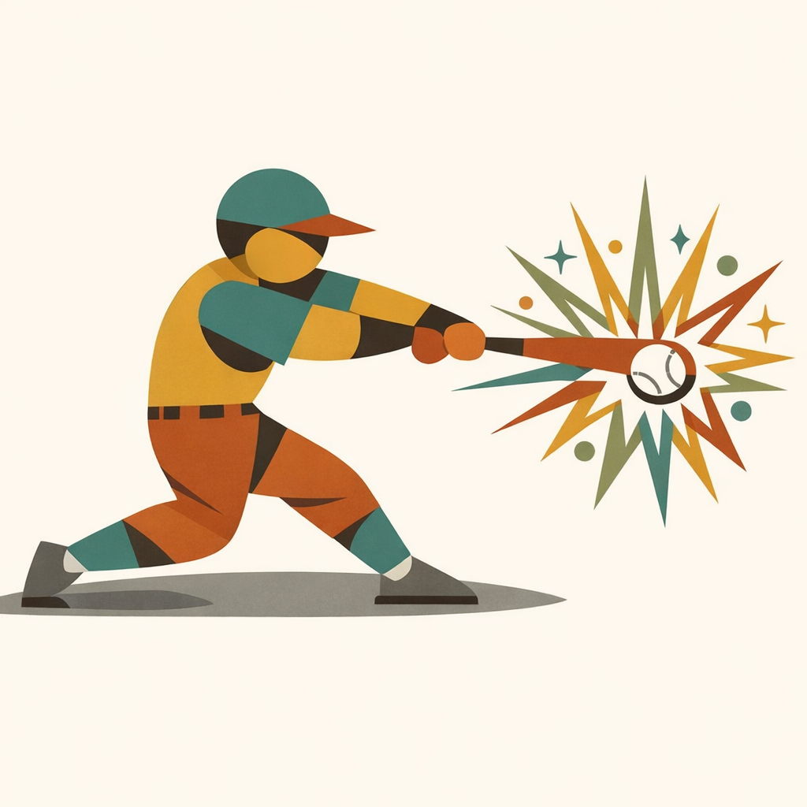
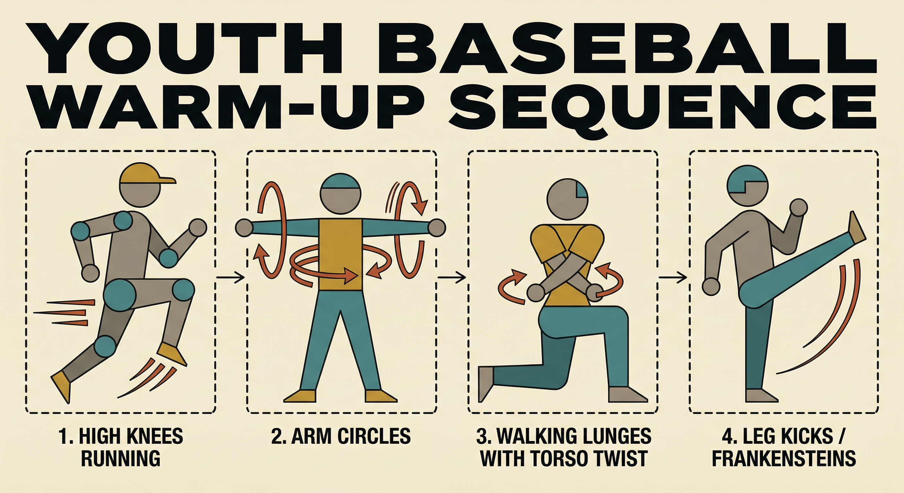
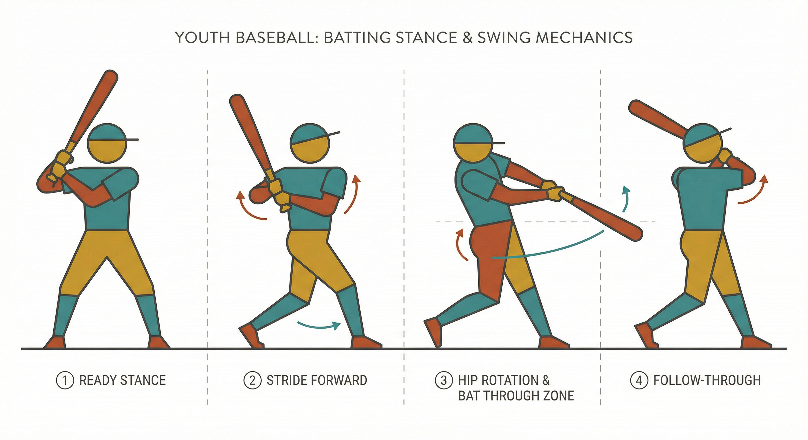
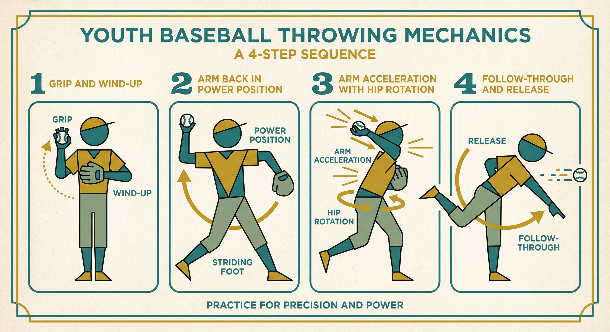
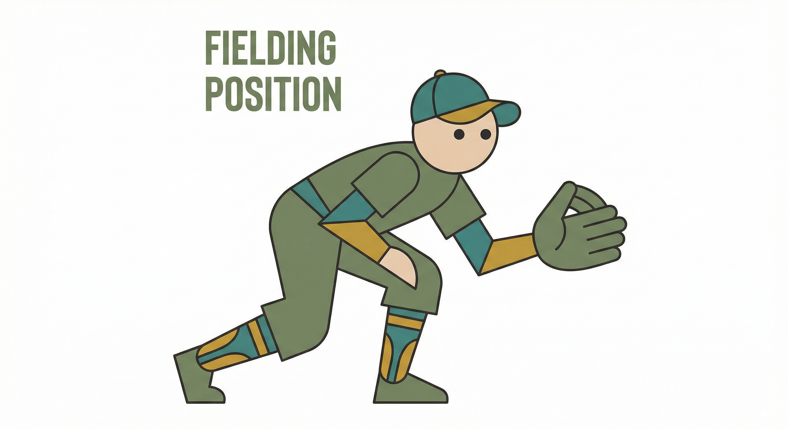

From Good to Outstanding
An At-Home Practice Guide for Youth Baseball Players
Built for players ages 7–12 who are already good and want to be great. Short, consistent daily sessions backed by guidance from Driveline Baseball, the American Baseball Coaches Association, and IMG Academy. Structured schedules, curated video instruction, and a clear path forward.
The Approach
Consistency Beats Volume
Fifteen focused minutes every day will outperform a ninety-minute grind twice a week. The research is clear: daily repetition builds muscle memory, and structured variety prevents burnout. Every session in this guide follows the same framework.
Every Session, Every Day
5–10 minutes of cardio, dynamic stretching, and a throwing ramp-up. Never skip this.
10–20 minutes on the day's primary skill. Rotate daily between hitting, throwing, fielding, and speed work.
3–5 minutes of arm care (J-Band routine) and light stretching. Non-negotiable after every throwing session.
What You Need
Equipment for At-Home Practice
You don't need a full diamond. A backyard, driveway, or garage with these essentials is all it takes to build elite habits at home.
Batting Tee Essential
Adjustable height. Used daily by every level from tee-ball to the major leagues. The foundation of at-home hitting.
Hitting Net Essential
7×7 ft pop-up net. Contains balls so you can practice in any backyard safely.
Baseballs & Wiffle Balls Essential
A bucket of practice balls for tee work and soft toss. Wiffle balls are great for limited-space hitting.
Glove Essential
Properly sized and broken in. The player should be able to open and close it easily.
Resistance Bands (J-Bands) Essential
For the daily arm care routine. Injury prevention and shoulder strengthening. Critical for ages 9 and up.
Cones Essential
For baserunning paths, agility drills, and setting up fielding stations. A set of 10–12 is plenty.
Medicine Ball (2–4 lb) Nice to Have
For rotational power drills. Recommended for ages 10 and up. Builds core strength that translates to bat speed.
Agility Ladder Nice to Have
Quick feet and coordination work. Fun for all ages and builds the footwork that shows up everywhere on the field.
Plyo Balls Nice to Have
Weighted throwing balls for arm care and mechanics work. Driveline-recommended for ages 9+.
Weighted Bat or Donut Nice to Have
For warm-up swings and building bat speed. Ages 10+ only. A few heavy swings before regular swings.
Start Every Session Here
The Daily Warm-Up Protocol
The single most important rule in youth baseball development: warm up to throw, don't throw to warm up. This 10–15 minute routine prepares the body and prevents injury. Follow it before every practice session, every time.
Phase 1: Get the Blood Moving
Light jog, high knees, butt kicks, side shuffles, and karaoke (lateral crossover steps). Start easy and build intensity. The goal is to break a light sweat.
Phase 2: Dynamic Stretching
Arm circles (small to large), leg kicks (Frankensteins), walking lunges with torso twist, hip openers, and trunk rotations. Move through each stretch — no holding. Save static stretching for after practice.
Phase 3: Throwing Ramp-Up
Start with wrist flips from 10 feet. Progress to two-knee throws, then standing throws at increasing distances. Finish at comfortable game distance. Focus on mechanics, not velocity. Use the ABCA 8-step progression: wrist flips, two-knee, 10 toes, power position, fielding position, four-step, long toss, quick catch.

ABCA Youth Throwing Program
American Baseball Coaches Association
Offense
Hitting Drills by Age Group
Hitting is a skill built through repetition and progressive challenge. Every major leaguer still hits off a tee daily. Start with the fundamentals and layer complexity as the player develops. The goal at every age: stay on top of the ball, hit hard ground balls and line drives up the middle.
Tee Work Fundamentals
Set the tee at belt height, center of the plate. Focus on balanced stance, eyes on ball, level swing through the zone. 3 sets of 10 swings. Start each set with 2 ultra-slow-motion swings to lock in mechanics.
Dry Swings for Balance
No ball, no tee. Just the bat. Take full swings focusing on finishing balanced — weight centered, not falling forward or backward. If the player can freeze at the end of the swing and hold for 2 seconds, the balance is right.
One-Knee Tee Drill
Kneel on the back knee with the front foot forward. Eliminates lower body and isolates the hands and swing path. Great for building a short, compact swing.
Soft Toss into Net
Partner kneels at a 45° angle and underhand tosses to the hitter's zone. Focus on tracking the ball, staying back, and driving through. 3 sets of 10.
Shuffle Swings
Start with feet together, shuffle-step into hitting position, then swing. Builds timing, rhythm, and full-body connection in the swing. Develops the feel of loading and driving forward.
Contact Point Work (Inside / Middle / Outside)
Move the tee to three locations: inside (pull), middle (up the middle), outside (opposite field). 5 swings at each spot. Teaches plate coverage and bat control for different pitch locations.
Front Toss Variations
Partner sits behind an L-screen 15–20 feet away and flips balls. Mix speeds and locations. The hitter adjusts timing while maintaining mechanics.
9-Zone Tee Drill
Set the tee to 9 positions across the strike zone (3 heights × 3 locations). 3 swings at each spot. Builds complete command of the zone and teaches the correct swing plane for each pitch location.
Rapid-Fire Soft Toss
Partner tosses balls in quick succession — the hitter gets only 1–2 seconds between swings. Builds quick hands, bat speed, and the ability to reset and fire under pressure. 2 rounds of 10.
Weighted Bat Warm-Up Swings
Take 10 slow, controlled swings with a weighted bat or donut, then immediately switch to the regular bat for 10 fast swings. The contrast builds bat speed through overspeed training.
Two-Ball Soft Toss
Partner holds two different colored balls, tosses both, and calls a color. Hitter must track and hit only the called ball. Develops elite-level pitch recognition and focus.

The 7 Best Youth Baseball Hitting Drills
Highly viewed youth hitting drill collection
Top 6 Hitting Drills for All Ages
Drills that work across age groups
IMG Academy Hitting Series
IMG Academy Baseball Program — 91K+ views
Arm Development
Throwing Mechanics & Arm Care
Good throwing mechanics learned early reduce long-term injury risk and build the arm strength that shows up everywhere — in the field, on the mound, and at the plate. Pair every throwing session with arm care. This is not optional.
Two fingers on top of the ball across the seams, thumb underneath. The ball should rest on the fingertips, not jammed back in the palm. Young players with small hands may need three fingers on top — that's fine. As their hands grow, transition to two. The grip is the foundation of every throw.
Barehand Wrist Flips
Partners 10 feet apart. Flick the ball using only the wrist. Builds feel for spin and release point.
Two-Knee Throwing
Both knees on the ground. Isolates the upper body and forces proper arm path without lower body compensation.
10 Toes to Partner
Stand square to partner, toes pointed at them. Add the pivot and hip turn. Learn to generate power from the ground up.
Power Position
Start in the stride position with arm already back. Focus on driving forward and releasing out front.
Fielding Position Throws
Start in athletic fielding stance. Field an imaginary ball and make the throw. Ties fielding and throwing together.
Four-Step Pattern
Full throwing motion with a four-step approach. Builds rhythm and timing into the throw.
Long Toss
Gradually increase distance to a comfortable maximum. Build arm strength and learn to let the arm work freely. Not about max distance — about quality throws.
Quick Catch
Rapid-fire catch at close distance. Develops quick transfers, soft hands, and the ability to receive and release under pressure.
Inspired by Driveline Baseball's youth arm care protocol. Perform with J-Bands (resistance bands) after every throwing session. 10 reps of each exercise:
Internal Rotation
Elbow at 90°, rotate the hand inward against band resistance.
External Rotation
Elbow at 90°, rotate the hand outward against band resistance. The most important exercise for shoulder health.
Lateral Raises
Arms at sides, raise to shoulder height against resistance. Builds deltoid stability.
Forward Flexion
Arms down, raise forward to shoulder height. Strengthens the front of the shoulder.
Source: Driveline Baseball — Free Youth Daily Arm Care Program

#1 Throwing Drill for Youth Players
Quick results-focused throwing drill
16 Fun Youth Throwing Drills
Comprehensive drill collection
Throwing Basics for Ages 8–12
Beginner-friendly throwing guide
Defense
Fielding Drills
Great defenders are made through repetition. The best part about fielding practice: most drills can be done solo with a wall, a ball, and a glove. Build the muscle memory so that when the ball comes to you in a game, your body already knows what to do.
Athletic Ready Position
Feet wider than shoulders, knees bent, weight on balls of feet, glove out front and open, eyes up. This is the starting position for every pitch. Practice getting into this position on command — it should become automatic.
Wall Ball (Solo Fielding Drill)
Stand 15–20 feet from a wall. Throw the ball at the wall and field the return. Vary the throw angle to create grounders, short hops, and line drives. 5 minutes of wall ball daily builds soft hands and quick reactions. The best solo drill in baseball.
Ground Ball Fundamentals
Partner rolls ground balls. Field with two hands — glove hand scoops, throwing hand covers on top. Funnel the ball to the center of the body. Stay low through the ball, don't stand up early. Make the throw to first.
Fly Ball Tracking
Drop step, turn, and run to the spot. Eyes on the ball the entire way. Catch above the throwing shoulder for a quick transition to the throw. Start with tennis balls for younger players to remove the fear factor.
Barehand Drill
Field ground balls without a glove. Forces soft hands and proper fielding position — you can't stab at a ball with your bare hand. Use tennis balls. 10 reps, then switch to the glove and feel the difference.

10 Best Fielding Drills for Kids
MOJO App — fun youth fielding drills
Fielding Drill Kids Love
Antonelli Baseball — 127K+ views
One Drill for Better Fielding & Throwing
Simple, instant improvement
On the Mound — Ages 9–12
Pitching Development
Pitching at the youth level is about mechanics, accuracy, and arm health — not velocity. No breaking balls until age 13 or older. Focus on throwing strikes with a fastball and developing a repeatable delivery. Respect pitch counts and rest days.
Balance Point Drill
Lift the leg to the balance point and hold for 3 seconds. Builds stability and the ability to control the body before delivering the pitch. 10 reps.
Towel Drill
Hold a towel instead of a ball. Go through the full pitching motion and snap the towel toward the target. Reinforces arm path, extension, and follow-through without stressing the arm. Great for off-days.
Knee Drill for Accuracy
Kneel on the throwing-side knee. Throw to a target 30 feet away. Eliminates lower body variables and isolates upper body mechanics and release point consistency.
Flat Ground Work
Full pitching delivery from flat ground (no mound). Throw to a catcher or net at 45 feet. Focus on mechanics without the added complexity of the mound slope. 15–20 pitches.
Pitch Count Guidelines
Follow Little League pitch count rules. Rest days are mandatory — not suggested.
| Age | Max Pitches / Day | Rest Required |
|---|---|---|
| 7–8 | 50 | 1 day rest at 21+, 2 days at 36+, 3 days at 46+ |
| 9–10 | 75 | 1 day rest at 21+, 2 days at 36+, 3 days at 51+, 4 days at 66+ |
| 11–12 | 85 | 1 day rest at 21+, 2 days at 36+, 3 days at 51+, 4 days at 66+ |
Pitching Accuracy Drills (Ages 9–14)
5 drills for precision and control
Speed & Agility
Baserunning & Speed Work
Speed is the one tool that affects every part of the game — offense, defense, and baserunning. The good news: speed at the youth level is mostly about technique and explosiveness, both of which are highly trainable at home with cones and a stopwatch.
Running Through First Base
Sprint full speed past the bag, hitting the front of the base with the foot. Don't slow down until 3 steps past. Look right to see if the ball got through. Practice this 5 times — it's the most common baserunning play and players get it wrong constantly.
Rounding First for Extra Bases
Start 15 feet before first. Angle out toward a cone in foul territory, hit the inside corner of first base, lean the inside shoulder, and accelerate toward second. The banana curve, not the sharp turn.
Taking Leads (Ages 9+)
Step left, step right, then two side shuffles. Quick, consistent, and always facing the pitcher. Never cross the feet. Practice returning to the bag on a pick-off move — dive back to the back corner of the base.
Cone Agility Circuit
Set up 5 cones in a line, 5 feet apart. Sprint to cone 1 and back, sprint to cone 2 and back, and so on. Also works as a lateral shuffle drill. 3 rounds with 30 seconds rest between. Builds the explosive first-step speed that separates fast players from everyone else.
Sprint Mechanics
10-yard dash starts from a standing position. Drive the knees up, pump the arms, stay low for the first 3 steps. Time each rep with a phone stopwatch. Track improvement weekly.
Simple Base Running Drills
Youth baseball baserunning fundamentals
Baserunning Drills for Small Spaces
Perfect for backyard practice
Between the Ears
The Mental Game
The difference between a good player and an outstanding one often isn't physical — it's mental. A player who can control their emotions, visualize success, and reset after failure will outperform more talented players who can't. Start building these habits now.
Daily Visualization (5 minutes)
Close your eyes. See yourself at the plate. Watch the pitch come in. Feel the swing. Hear the crack of the bat. See the ball fly. Do this for 5 minutes daily, focusing on one specific situation for 3–4 days at a time — a clutch at-bat, a diving catch, a perfect throw. Use all your senses. The brain can't fully distinguish between vivid visualization and real practice.
Build Your Pre-At-Bat Routine
Every great hitter has one. It can be simple — tap the plate twice, take a deep breath, focus on the pitcher's release point. The routine is an anchor. It tells your body: "This is what I do before I compete." Practice it at home during tee work until it's automatic.
The Reset Button
Teach players to physically reset after a mistake — a deep breath, a clap of the hands, touching the brim of the cap. Whatever it is, it signals to the brain: "That at-bat is over. This is a new one." A .300 hitter fails 7 out of 10 times. Learning to let go is a skill, not a personality trait.
"What you focus on usually comes true. Focus on what you want to happen — not what you're afraid will happen."
Walk to the Box with a Smile
Even if you have to force it. A relaxed body performs better than a tense one. A smile triggers the parasympathetic nervous system and reduces anxiety. Try it at home: take your at-bat routine, walk to the tee, and smile before you swing. It feels strange at first. Then it becomes your edge.
The Centerpiece
Weekly Practice Schedules
Three complete weekly grids, one for each age group. Every day is laid out with exactly what to do and for how long. Print it, tape it to the garage wall, and check off each day. Consistency is the entire game.
Ages 7–8 — 4 Days / Week — 15–20 Minutes
Ages 9–10 — 5 Days / Week — 20–25 Minutes
Ages 11–12 — 5–6 Days / Week — 25–35 Minutes
Stay Accountable
Weekly Progress Tracker
Print this page and check off each day. Tape it to the garage wall, the fridge, or next to the batting tee. Seeing a week of checkmarks builds the habit that builds the player.
This Week
"The players who show up every day — even when it's just 15 minutes — are the ones who separate from the pack."
Research & Sources
Where This Guide Comes From
This guide draws from established authorities in youth baseball development. No bro-science — just proven methods from organizations that train thousands of youth players every year.
- Driveline Baseball — Youth arm care protocols, throwing development programs, and the "Skills that Scale" practice framework. drivelinebaseball.com
- American Baseball Coaches Association (ABCA) — The 8-step throwing progression and structured youth practice plans. abca.org
- IMG Academy — Hitting development series and elite youth training methodology. imgacademy.com
- Little League International — Pitch count rules, rest day requirements, and age-appropriate play guidelines. littleleague.org
- Antonelli Baseball — Over 1,000 instructional videos covering every skill for youth and advanced players. antonellibaseball.com